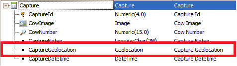
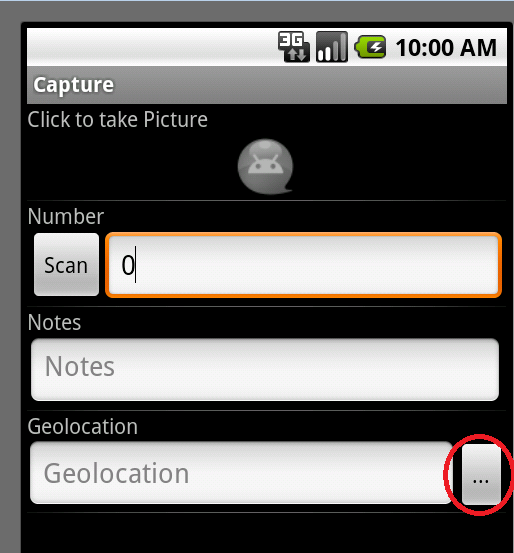
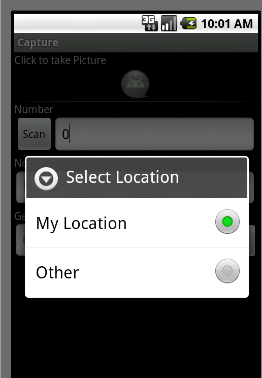
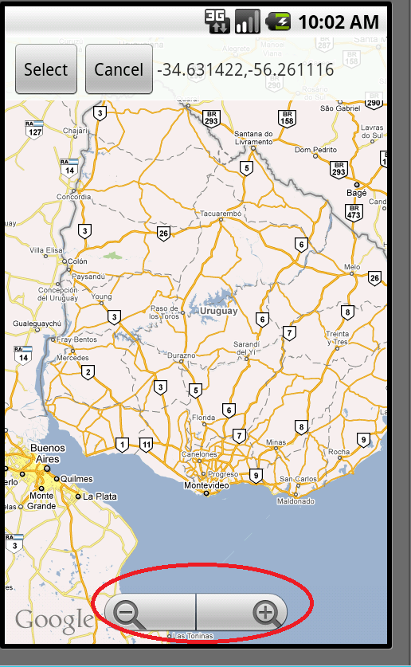

This control allows you to select a geolocation (latitude, longitude) from a map to add a value to an attribute in your SD application. It is automatically set to an attribute which has the geolocation data type or domain. It has two possibilities to select a geolocation:
IDE CONTROLAndroid:    You can navigate through the map with the controls, and by tapping on a point in the map you`ll be able to see the lat/long of the point you have tapped.
|
| Backlinks | |
| Android Google Services API Key property | Android Maps API Key property |
| Android Maps API property |